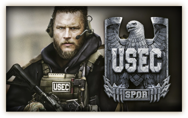

“Игра, обостряющая чувства
и повышающая адреналин”
“Никаких ограничений в PvP”
WCCFTECH
“Одна из самых сложных
и карающих игр современности”
“Сюжетная игра нового уровня
с уникальным прогрессом квестов”
Escape from Tarkov / Побег из Таркова - это хардкорная реалистичная сюжетная многопользовательская онлайн-игра, сочетающая в себе черты жанров FPS / TPS, боевого симулятора и RPG c ММО элементами.
С каждым безвозвратно уходящим в прошлое днем ситуация в Норвинской области становится все более и более запутанной. Непрекращающиеся бои на улицах Таркова вызвали массовую панику среди населения, заполнив беженцами ведущие из него дороги. Нашлись, впрочем, среди местных жителей и те, кто решил остаться, увидев в возникшей ситуации возможность поживиться за чужой счет. Приняв новые реалии как данность, неорганизованные одиночки из числа обитателей Таркова - Дикие - стали сбиваться в хорошо вооруженные банды, дерущиеся друг с другом за передел города. Сегодня весь Тарков разграничен невидимыми линиями на зоны влияния различных группировок. В своей жажде наживы вооруженные бандиты не остановятся ни перед чем, их не пугают ни убийства гражданских лиц, ни прямые столкновения с двумя частными военными компаниями.
Игрокам предстоит вжиться в роль одного из наемников, переживших начальную стадию Тарковского конфликта. После выбора одной из сторон – USEC или BEAR – персонаж игрока начинает свой нелегкий путь в поисках способа выбраться из города. Выходы из Таркова перекрыты миротворцами ООН и российскими войсками, все линии снабжения отрезаны, а связь с командованием утрачена. В таких условиях каждому приходится самому выбирать, как выжить, что делать, и как выбраться из погрузившегося в пучину хаоса мегаполиса.
Главными действующими силами в Норвинской области остаются две частные военные компании, нанятые сторонами изначального конфликта. USEC, нанятые скандально известной международной корпорацией Terra Group, в яростных схватках защищают объекты работодателя, активно препятствуя проводимому местными властями расследованию деятельности корпорации. Более того, по данным разведслужб, USEC также обеспечивает силовую поддержку и прикрытие незаконных работ и исследований иностранной компании. Им противостоит частная военная структура BEAR, по слухам, созданная по приказу Правительства России, но формально нанятая властями Норвинской области для расследования и добычи любых доказательств противоправных действий Terra Group.
United Security (USEC) является частной военной компанией (ЧВК) одной из главных фракций в Escape from Tarkov. USEC работает на международную корпорацию Terra Group, активно участвует в вооруженных столкновениях, препятствующих расследованию деятельности Terra Group, осуществляемой местными органами власти.
Дикие – члены банд, орудующих в городе Тарков. Дикий может быть как под управлением искусственного интеллекта, так и под управлением игрока. Противостояние операторов ЧВК и диких будет, по сути, PvE составляющей игры.
Торговцы. Столпы торговли в разрушенном, осажденном Таркове. Каждый торговец специализируется на определенной категории товаров, будь то военная экипировка, оружие или медикаменты.
Вы можете повышать репутацию у каждого торговца выполняя квесты, а совокупность репутации и определенного уровня персонажа даст вам доступ к более продвинутой экипировке у того или иного торговца.